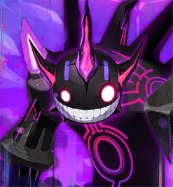

Checked-in boss knowledge
Limbo
Dodge chip hits so Purification charges, press it the moment it fills, and keep your own Erosion under 1000.
- Boss level
- 285entry 285
- Defence (PDR)
- 380%
- Authentic Force
- 500
- Party
- Up to 3
HP
- Phase 1
- 1.31q
- Phase 2-1
- 656t
- Phase 2-2
- 656t
- Phase 3
- 1.77q
- Aim for 550 Force The full 1.25x damage tier.
Overview
Erosion
- Death
- ↓ +150
- Fall through the floor
- ↓ +50
- 50-Erosion hits on Hard
- ↓ +80
- Black's grab on Hard
- ↓ +100
- Risk left at a swap
- ↓ +1 per 1%
- Passageway success
- ↑ -150
Starts at 0; 1000 removes you. Destiny starts you at 800, and recovery can take you below it.
Phase 2 Risk removed per press
- Solo
- N 39% · H 50%
- Duo
- N 19.5% · H 25%
- Trio
- N 13% · H 16.7%
Specter C; Specter D removes about half.
Specter D walls by shared Risk
- Under 25% · open
- 25% · left wall
- 50% · right wall
- 75% · bottom wall
- 100% · top wall, Endless Abyss
Inside a section as it closes costs 300% HP.
- Erosion Personal, from 0; 1000 removes you.
- Purification Energy NPC/Gather key. Charges over time, resets when hit; lowers Risk and repairs the room.
- Bind, no slow Limbo can be bound but not slowed. HP splits 30/30/40.
Danger
- Specter B floor A section drops every 30s; falling adds 50. The slime can hit 5 times.
- Specter D walls Close at 25/50/75/100% Risk for 300% HP; 100% starts Endless Abyss.
- Limbo Black pools One every 7s; six start a special pattern. Purify beside one to clear it.
- Limbo White Six Walls of Thought start a special pattern; Monster of Truth ticks fast.
- Specter C fusions At 80% of Phase 2 HP he vanishes ~5s; the ~30s fusion after it has attackable periods.
- Leaving the bubble Away from Specter A or Limbo Black, Erosion ticks up each second.
Tips
- Press on full Every phase. Ten presses per 100s clear personal Risk.
- Everyone presses in Phase 2 One idle player lets Risk hit 100%. Beat each Specter D wall threshold.
- Bubble fights Crouch Grasp of Truth; stand on him for Dimensional Collapse.
- Grab timing Usually after four attacks; after a fifth, expect it. Stand behind or above.
- Specter B burst Burst with a Genesis i-frame up, or after the slime passes.
- Risk Taker Usable except against Specter D and Limbo Black.
Phases
Phase 1 · Specters A and B personal Risk
- Personal Risk Forms swap every 100s. Each press removes 10%; leftover Risk becomes Erosion.
- Bubble fight Fight Specter A inside its bubble (outside, Erosion ticks up each second); crouch Grasp of Truth, stand on him for Dimensional Collapse.
- Specter B floor A section drops every 30s and falling adds 50 Erosion; Purification restores floor. The slime can hit 5 times.
- Specter B burst Burst with a Genesis i-frame up, or after the slime passes.
Phase 2 · Specters C and D shared Risk
- Shared Risk Climbs 4%/s from 0. At 100% a special pattern runs and he can't be damaged.
- Passageway Bounce spikes into the Shadow of Origin 3 times in 30s for -150 Erosion.
- Specter C fusions At 80% of Phase 2 HP he vanishes ~5s, then a ~30s fusion with attackable periods. The next one triggers 20 points below the HP reached.
- Specter D walls Close at 25/50/75/100% Risk (left, right, bottom, top) for 300% HP; 100% starts Endless Abyss.
- Everyone presses One idle player lets shared Risk hit 100%; against D, pull it under each wall threshold.
Phase 3 · Limbo Black and White personal Risk
- Personal Risk again Same 100s swap and 10% presses as Phase 1.
- Black's pools A pink pool every 7s; six start a special pattern. Purify beside one to clear it.
- Black's grab Usually after about four attacks, so expect it after a fifth; stand behind or above. It adds Erosion (100 on Hard).
- Bubble fight Fight Limbo Black inside his bubble (outside, Erosion ticks up each second); crouch Grasp of Truth, stand on him for Dimensional Collapse.
- Limbo White Six Walls of Thought start a special pattern; Monster of Truth ticks every 0.2s.
Strategies
Skip the second fusion
Low risk · High damage requirementParties with comfortable damage for Phase 2, on Normal or Hard.
- At exactly 80% of Phase 2 HP Specter C disappears for about 5s; hold damage until he is back.
- Damage him during the attackable parts of the ~30s fusion and get below 70% before it ends.
- The next fusion triggers 20 points below the HP reached during the first (75% gives 55%), so under 70% it never comes.
- Risk is paused and Purification is off during the fusion; dodge, then purify as soon as it is back.
Payoff Removes the second disappearance and fusion pattern
Handle both fusions
Low risk · Medium damage requirementParties near minimum damage
- Do not burst into either ~5s disappearance; keep hitting in the attackable parts of each fusion.
- Judge where the next fusion triggers from the current HP (20 points below what you reached) instead of holding everything until the second fusion ends.
Payoff Slower Phase 2, but no burst is spent while he is gone
Notes
- Limits 20 min · 10s potions · 1-3 players · 12 boss kills a week.
- MapleSEA v251 (Jun 2026) Purification works during Origin/Ascent; Phase 3 map ~32% taller.
- Carcion symbol Lv 11 +20% damage against Limbo (MapleSEA v251).
- Destiny Resolve per clear Normal 120 · Hard 360, split among entrants.
- HP estimates Overdrive HP is estimated from the published KMS reductions.
Sources
Research checked .
- MapleStory Complete Limbo GuideiSIingGunz · guide
- MapleSEA v237 - Limbo releaseNexon (MapleSEA) · official
- MapleSEA v251 - Content update part 2 (Limbo changes)Nexon (MapleSEA) · official
- MapleSEA v251 - Content update (Symbol Growth Level 11)Nexon (MapleSEA) · official
- KMS ver. 1.2.393 - Limbo launchOrange Mushroom · official
- KMS 1.2.416 OVERDRIVE patch notesNexon Korea · official
- MapleTools - LimboMapleTools · tool
- MapleSEA v252 content (Destiny Weapon 2nd Growth)Nexon SEA · official
- MapleStory Wiki - Destiny WeaponMapleStory Wiki contributors · wiki
- Inven - Limbo Normal guide (fusion timing)Inven contributors · guide
- NamuWiki mirror - Limbo boss pageNamuWiki contributors · wiki